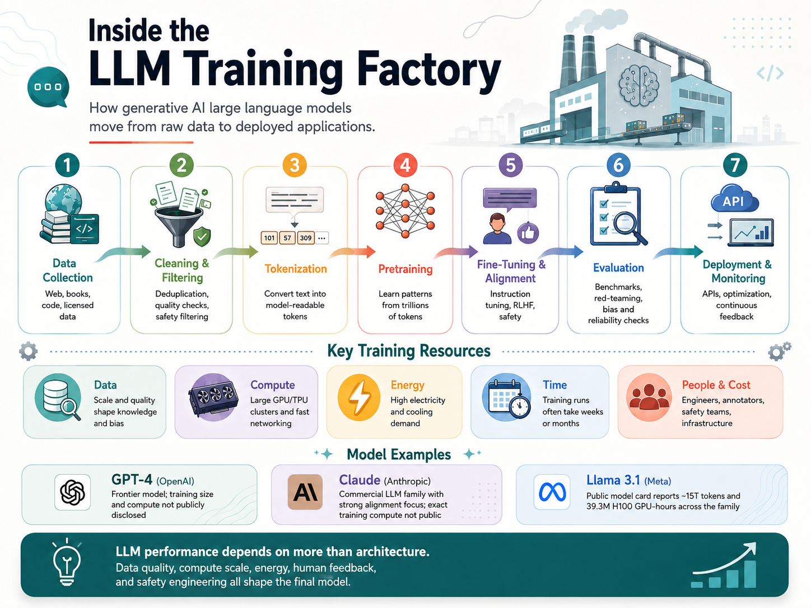

Workshop 3 · Generative AI
Inside the LLM Training Factory
This artifact presents a visual explanation of how generative AI large language models are trained, from raw data collection through cleaning, tokenization, pretraining, fine-tuning, evaluation, deployment, and monitoring. It also highlights the major resources required to train modern LLMs, including datasets, computational power, energy, time, people, and cost.
Visual Artifact
The infographic explains the end-to-end training pipeline for generative AI large language models. It shows how raw data is transformed into a deployed AI system through data preparation, model training, alignment, testing, and monitoring.

Description
This artifact focuses on the systems and resources behind modern generative AI models. It begins with data collection from sources such as web text, books, code, licensed data, and human feedback. The data is then cleaned, filtered, deduplicated, and converted into tokens so it can be used for large-scale model training.
The visual also explains that pretraining is only one part of the process. After a model learns general language patterns from large datasets, it usually goes through fine-tuning, alignment, evaluation, safety testing, deployment, and continuous monitoring. These steps help improve the model's usefulness, reliability, and safety.
Objective
The objective of this artifact is to explain how generative AI large language models are trained and why training them requires significant resources. The artifact connects the technical training process with the practical infrastructure needed to support it, including data pipelines, GPU or TPU clusters, energy usage, engineering teams, evaluation methods, and deployment systems.
Process
I started by breaking the LLM training lifecycle into major stages: data collection, cleaning and filtering, tokenization, pretraining, fine-tuning and alignment, evaluation, and deployment. I then identified the key resources involved in each stage, including data quality, compute capacity, energy demand, training time, human feedback, and cost.
After organizing the content, I designed the artifact as a systems-style infographic rather than a model comparison chart. This helped make the artifact visually different from my earlier AI/ML model framework while showing a new skill set focused on AI infrastructure, resource planning, and generative AI model development.
Tools and Tech Used
- GitHub Pages
- HTML
- CSS
- JavaScript
- ChatGPT
- Generative AI course materials
- LLM training and infrastructure research
- AI model documentation and technical reports
Model Examples
The artifact includes examples of GPT-4 from OpenAI, Claude from Anthropic, and Llama 3.1 from Meta. GPT-4 is presented as a frontier model where detailed training data, model size, and compute information are not fully public. Claude is included as a commercial LLM family with an emphasis on helpfulness and alignment, while Llama 3.1 is included because Meta has released more public model-card information about training data and compute resources.
These examples show that transparency varies across generative AI systems. Some organizations release detailed model cards, while others provide limited information because of safety, competitive, or infrastructure concerns.
Value Proposition
This artifact makes the hidden infrastructure behind generative AI easier to understand. Instead of only focusing on model outputs, it explains the full process required to build, evaluate, and deploy large language models. This is valuable because many users interact with AI systems without seeing the data, compute, energy, cost, and human effort behind them.
The unique value of this artifact is that it connects generative AI concepts with real engineering considerations. It shows that model performance depends on more than model architecture. Data quality, compute scale, alignment methods, safety evaluation, and deployment infrastructure all influence the final system.
Reflection
This assignment helped me understand that training a generative AI large language model is not a single-step process. It requires a complete pipeline that includes data preparation, large-scale compute, training infrastructure, human feedback, safety evaluation, and continuous improvement after deployment.
One of my biggest takeaways was that resource planning is a major part of generative AI development. Datasets, GPU clusters, energy usage, engineering teams, and training time all affect the quality and cost of the final model. I also learned that public information about frontier models is often limited, so it is important to explain uncertainty clearly and avoid presenting undisclosed training details as confirmed facts.
This artifact helped me expand my portfolio beyond basic model comparison. It demonstrates a more systems-level understanding of AI/ML by showing how generative AI models are built and supported at scale.
References
OpenAI. (2023). GPT-4 technical report. https://cdn.openai.com/papers/gpt-4.pdf
Meta. (2024). Llama 3.1 405B model card. Hugging Face. https://huggingface.co/meta-llama/Llama-3.1-405B
Anthropic. (n.d.). Claude. https://www.anthropic.com/claude
Stanford Institute for Human-Centered Artificial Intelligence. (2024). Artificial Intelligence Index Report 2024. https://aiindex.stanford.edu/report/
OpenAI. (2026). ChatGPT [Large language model]. https://chatgpt.com/